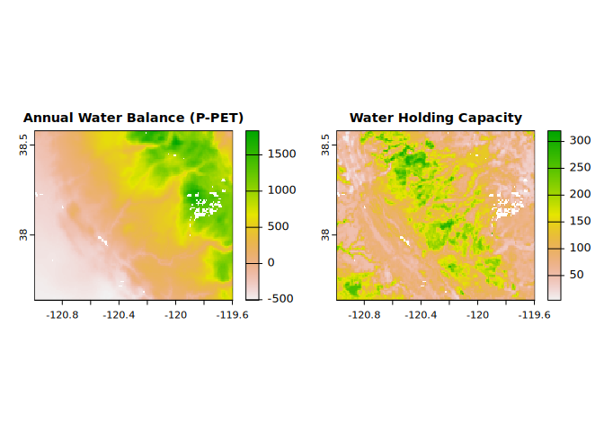
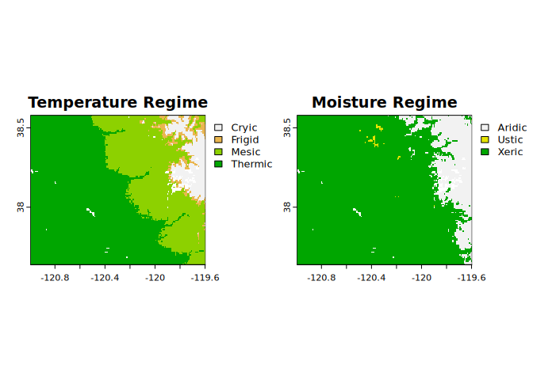
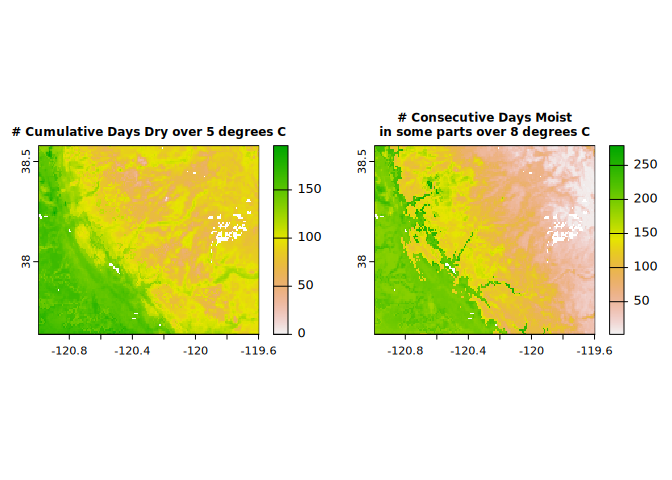
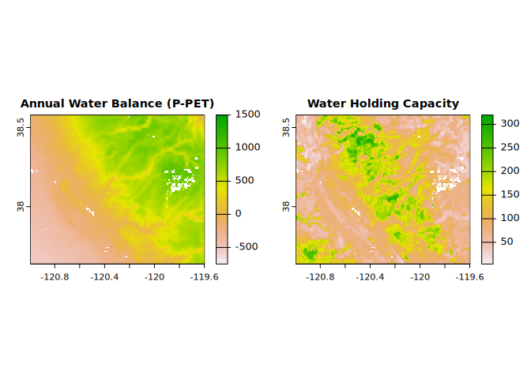
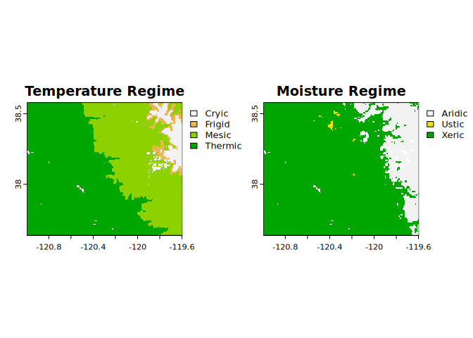
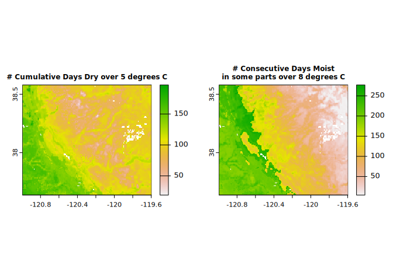

R wrapper for Java Newhall Simulation Model (jNSM) – “A Traditional Soil Climate Simulation Model”
Provides methods to create input, read output, and run the routines from the legacy Java Newhall Simulation Model (jNSM).
Install {jNSMR}
First, install the development version of the R package. This will install the latest version of the Java Newhall model JAR (in the {jNSMR} folder of your package library).
# install.packages('remotes')
remotes::install_github('ncss-tech/jNSMR')Run batches of models
The jNSM has a defined CSV (comma-separated value) batch file format. Examples of batch inputs are included in the official download. The batching in the {jNSMR} package is handled by R code, not Java. The main interface to batching is newhall_batch().
newhall_batch() takes either a character vector of CSV batch file paths, a data.frame, a SpatRaster or RasterStack/Brick object as input.
GeoTIFF/SpatRaster Input
library(jNSMR)
#> jNSMR (0.3.0) -- R interface to the classic Newhall Simulation Model
#> Added JAR file (newhall-1.6.5.jar) to Java class path.
library(terra)
#> terra 1.7.49
x <- terra::rast(system.file("extdata", "prism_issr800_sample.tif",
package = "jNSMR"))
x$elev <- 0 # elevation is not currently used by the model directly
y <- newhall_batch(x) ## full resolution
#> newhall_batch: ran n=18790 simulations in 21 secs
par(mfrow = c(1, 2))
terra::plot(y$annualWaterBalance,
cex.main = 0.9, main = "Annual Water Balance (P-PET)")
terra::plot(y$waterHoldingCapacity,
cex.main = 0.9, main = "Water Holding Capacity")
terra::plot(y$temperatureRegime, main = "Temperature Regime")
terra::plot(y$moistureRegime, main = "Moisture Regime")
terra::plot(y$numCumulativeDaysDryOver5C,
cex.main = 0.75, main = "# Cumulative Days Dry over 5 degrees C")
terra::plot(y$numConsecutiveDaysMoistInSomePartsOver8C,
cex.main = 0.75, main = "# Consecutive Days Moist\nin some parts over 8 degrees C")
par(mfrow = c(1, 1))Now let’s try again with ‘Daymet’ monthly climate data at 1 km resolution. ‘Daymet’ takes a different approach to prediction of temperature and precipitation so we may expect to see some differences–but ideally we have good general agreement between the two models.
library(jNSMR)
library(terra)
x2 <- terra::rast(system.file("extdata", "daymet_issr800_sample.tif",
package = "jNSMR"))
x2$elev <- 0 # elevation is not currently used by the model directly
y2 <- newhall_batch(x2) ## full resolution
#> newhall_batch: ran n=18790 simulations in 20 secs
par(mfrow = c(1, 2))
terra::plot(y2$annualWaterBalance, range = c(-750, 1500),
cex.main = 0.9, main = "Annual Water Balance (P-PET)")
terra::plot(y2$waterHoldingCapacity,
cex.main = 0.9, main = "Water Holding Capacity")
terra::plot(y2$temperatureRegime, main = "Temperature Regime")
terra::plot(y2$moistureRegime, main = "Moisture Regime")
terra::plot(y2$numCumulativeDaysDryOver5C,
cex.main = 0.75, main = "# Cumulative Days Dry over 5 degrees C")
terra::plot(y2$numConsecutiveDaysMoistInSomePartsOver8C,
cex.main = 0.75, main = "# Consecutive Days Moist\nin some parts over 8 degrees C")
par(mfrow = c(1, 1))CSV File Input
Selected example input files have been included in inst/extdata directory of this package.
pathname <- system.file("extdata/All_PA_jNSM_Example_Batch_Metric.csv", package = "jNSMR")[1]
res <- data.table::data.table(newhall_batch(pathname, toString = FALSE, verbose = FALSE))
head(res)
#> annualRainfall waterHoldingCapacity annualWaterBalance
#> 1: 1147.33 200 474.2701
#> 2: 932.69 200 270.1988
#> 3: 1084.32 200 427.3922
#> 4: 992.64 200 332.5753
#> 5: 1262.39 200 629.7745
#> 6: 1118.09 200 452.0308
#> annualPotentialEvapotranspiration summerWaterBalance
#> 1: 673.0599 -69.77925
#> 2: 662.4912 -112.88055
#> 3: 656.9278 -79.13638
#> 4: 660.0647 -88.15085
#> 5: 632.6155 -15.91051
#> 6: 666.0592 -107.59863
#> dryDaysAfterSummerSolstice moistDaysAfterWinterSolstice numCumulativeDaysDry
#> 1: 0 120 0
#> 2: 0 120 0
#> 3: 0 120 0
#> 4: 0 120 0
#> 5: 0 120 0
#> 6: 0 120 0
#> numCumulativeDaysMoistDry numCumulativeDaysMoist numCumulativeDaysDryOver5C
#> 1: 0 360 0
#> 2: 0 360 0
#> 3: 0 360 0
#> 4: 0 360 0
#> 5: 0 360 0
#> 6: 0 360 0
#> numCumulativeDaysMoistDryOver5C numCumulativeDaysMoistOver5C
#> 1: 0 227
#> 2: 0 226
#> 3: 0 224
#> 4: 0 226
#> 5: 0 212
#> 6: 0 223
#> numConsecutiveDaysMoistInSomeParts numConsecutiveDaysMoistInSomePartsOver8C
#> 1: 360 205
#> 2: 360 206
#> 3: 360 204
#> 4: 360 205
#> 5: 360 193
#> 6: 360 203
#> temperatureRegime moistureRegime regimeSubdivision1 regimeSubdivision2
#> 1: Mesic Udic Typic Udic
#> 2: Mesic Udic Typic Udic
#> 3: Mesic Udic Typic Udic
#> 4: Mesic Udic Typic Udic
#> 5: Mesic Udic Typic Udic
#> 6: Mesic Udic Typic UdicLicense information
This package uses a modified version of the Newhall model v1.6.1 (released 2016/02/10) of the jNSM (official download here: https://www.nrcs.usda.gov/resources/education-and-teaching-materials/java-newhall-simulation-model-jnsm). The compiled JAR and source code are distributed in this R package under the “New” (3-Clause) BSD License. See LICENSE for more information. Modifications to the JAR relative to legacy version facilitate higher throughput and access to additional data elements.
System requirements
The system requirements of the extraction and installation tools (Windows .EXE archive) at the official download link may not be met on your system, but the core Java class files are stored in a platform-independent format (a Java JAR file e.g newhall-1.6.1.jar)–a core dependency in this package.
As long as you have a modern Java Runtime Environment (you probably do), you will be able to run jNSM with only minimal setup.